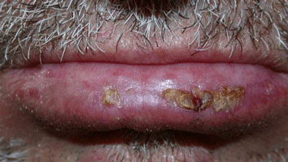
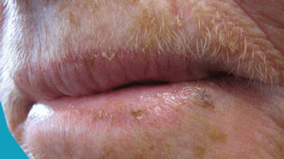

What is Actinic Cheilitis?
Actinic cheilitis, sometimes known as "farmer's lip" or "sailor's lip," is
a precancerous condition related to cumulative lifetime sun exposure. The
lower lip is most often affected. Individuals with actinic cheilitis often
complain of persistent dryness and cracking of the lips. They will frequently
exhibit other effects of sun-damaged skin, such as precancerous lesions on the
skin called actinic keratoses and extensive wrinkling.
A certain type of skin cancer (squamous cell carcinoma) develops in 6–10% of
cases of actinic cheilitis.

Actinic cheilitis results from chronic exposure of the lower lip to solar
ultraviolet radiation. It is more vulnerable than surrounding skin because
mucosal epithelium is thinner and less pigmented than the epidermis.

Actinic cheilitis is significantly more common in men, the elderly, and fair-skinned individuals.
There is also a strong association with tobacco use.
Some medical conditions can make it more likely that you’ll develop AC.
People with weakened immune systems have a higher risk of developing AC.
They’re also at an increased risk for AC leading to skin cancer.
Albinism can also increase the risk for AC.
Actinic cheilitis most commonly affects the lower lip (90%), and causes:
- Dryness
- Thinned, fragile, skin
- Thickened, scaly papules and plaques (actinic keratoses)
Less common features of actinic cheilitis include:
- Swelling
- Redness
- Fissuring, focal ulceration and crusting
- Soreness
- Loss of demarcation between the vermilion border of the lip and its adjacent skin
- White thickened patches (leukokeratosis)
- Discoloured skin with pale or yellow areas
- Prominent folds and lip lines
- Difficulty applying lipstick, which tends to “bleed” into the surrounding lines
Actinic cheilitis is a pre-malignant condition. It predisposes to:
Cancer of the lip is more common in smokers than in non-smokers. Other factors include oncogenic
human papillomavirus (wart virus), alcohol abuse and immunosuppression.
Invasive squamous cell carcinoma should be suspected if the lip is focally tender, or a
persistent ulcer or enlarging nodule develops.
Prevention is very important. Wearing barrier clothing (eg, wide-brimmed hats) and
sunscreen-containing lip balms can aid in preventing actinic cheilitis.
In the early stages, AC might just look and feel like very chapped lips.
If you notice something on your lip that feels scaly, looks like a burn,
or turns white, you should see a doctor. If you don’t have a dermatologist,
your primary care doctor can refer you to one if necessary.
A dermatologist is usually able to diagnose AC just by looking at it, along
with a medical history. If they want to confirm the diagnosis, they might do
a skin biopsy. This involves taking a small piece of tissue from the affected
part of your lip for lab analysis.
Seek the evaluation of a primary care provider or dermatologist when persistent
scaling of the lips is noted. A biopsy of the lip may be needed to rule out
squamous cell carcinoma.
In severe cases without evidence of malignancy, a lip shave procedure
(vermilionectomy) may be performed. In less extreme cases, your physician
may recommend destruction (ablation) of the damaged cells with a carbon
dioxide (CO2) laser.
Alternative treatments include the use of electric current to destroy the
precancerous cells (electrodesiccation) and a facial sanding technique
(dermabrasion). Topical therapy with a chemotherapeutic agent (fluorouracil)
or a topical immunomodulator (imiquimod) may be prescribed.
If Actinic cheilitis isn’t treated, it could turn into a type of skin cancer called
squamous cell carcinoma. While this only happens in a small percentage
of Actinic cheilitis cases, there is no way to tell which will turn into cancer.
Therefore, most cases of Actinic cheilitis are treated.
Actinic cheilitis is a pre-malignant condition. It predisposes to:
- Intraepidermal carcinoma (Bowen disease or squamous cell carcinoma in situ)
- Invasive squamous cell carcinoma
Cancer of the lip is more common in smokers than in non-smokers. Other factors
include oncogenic human papillomavirus (wart virus), alcohol abuse and
immunosuppression.
Invasive squamous cell carcinoma should be suspected if the lip is focally
tender, or a persistent ulcer or enlarging nodule develops.
Actinic cheilitis can be prevented by protecting the lips from sun exposure.
In smokers, the risk of cancer can be reduced by smoking cessation.
These are similar to ways to protect yourself from sun damage in general:
- Wear a hat with a wide brim that shades your face.
- Use lip balm with an sun proof of at least 15. Put it on before you
go into the sun, and reapply it often.
- Take breaks from the sun when possible.
- Avoid being outside in midday, when the sun is strongest.
Actinic cheilitis can improve with effective sun protection and treatment.
Continued sun exposure and lack of treatment increase the risk of squamous
cell carcinoma, which is potentially life threatening.